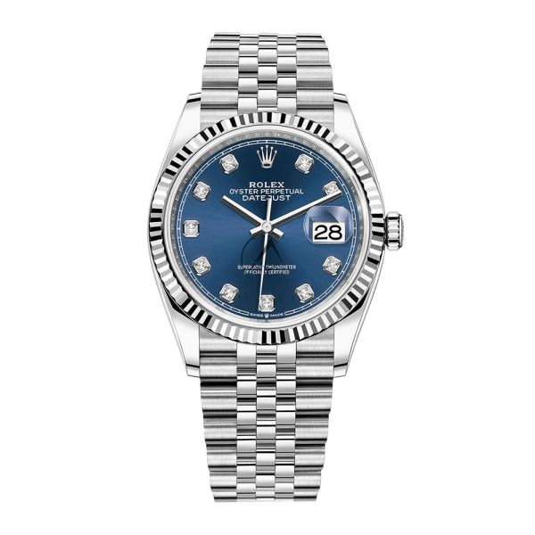

The Rolex Datejust is a classic and highly versatile timepiece, widely regarded as the quintessential Rolex. It embodies the brand's core values of timeless design, technical innovation, and unwavering reliability Launched in 1945 to celebrate Rolex's 40th anniversary, the Datejust was the first self-winding chronometer wristwatch to feature an automatically changing date window on the dial..
 The Daytona's story is inextricably linked to the world of motorsports. Rolex became the official timekeeper of the Daytona International Speedway in 1962, a partnership that cemented the brand's connection to racing. The following year, Rolex launched the first "Cosmograph," reference 6239, which would later be nicknamed "Daytona" and have the name officially added to the dial.